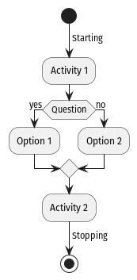

Introduction to the Unit
This unit focuses on developing skills and habits of best practice in software development using Python and Rust. Students will practice software development focusing particularly on documentation, debugging, version control, object oriented design, test-driven development (TDD), tooling, and more!
This course follows three main sections:
- Best Practices of Software Development in Python & Rust
- Implementation: Develop a CLI / TUI with Rust and Python that includes a git repo with conventional commits 1, documentation, test coverage and a static site.
- Object Oriented Programming in Python and Rust
- Implementation: Develop an immediate mode Gui in Rust, as above
- Object Oriented Design
- Implementation: Develop a GUI in PySide6, as above
Students will maintain these projects in a public git repo and be required to submit pull requests (PR), report issues to each other and discuss development on Matrix.
This unit aims to develop practical skills to ground theoretical concepts while encouraging students to reflect upon the best practices in software development. This is acheived by devloping habits and reinforcing workflows around modern tooling widely adoptoed in the dev space, this foundation will be a platform that the future practioner can build upon as they grow. This course is designed for undergraduate students who are familiar with basic programming, seeking to deepen their understanding by developing software.
In addition, we encourage students track their environment configuration with git and share it with the class. This will help motivate the importance of reproducibility, documentation and collaboration in software development.
Finally, students will be asked to reflect on the development experience in both languages for documentation, TDD, typing etc. Software developers use a variety of different languages and must understand the benefits and differences of each language to be effective in the field.
This subject is entirely focused on practical implementation and reflection. There is no one right answer to software development and developers tend to have a lot of opinions. The aim here is to equip students with a foundational workflow that can be adapted to a future career in software development.
Introduction to the Software Development Life Cycle
Software Development Life Cycle
Overview
The SDLC outlines the typical process in a software project, the basic structure 1 is outlined below. Even though it may seem trivial it's worth reflecting on the steps to avoid making commitments that a developer will later regret. These commitments can often make it easier to discard an entire code base rather than unwind the development decisions, see e.g. 2.
-
Identify the Problem
- e.g. "I need to write a program that will calculate the area of a circle given the radius."
- Ensure it's not an XY problem
- e.g. "I need to write a program that will make it faster to manually transcribe invoices", in this case, maybe the invoices should be digitized instead.
-
Plan the Solution
- Estimate the effort involved
- Break the problem down into smaller problems
- Prioritize the problems
- Consider the 2 language problem
- e.g. Write a MWE 3 as a CLI in Python or jump straight into the GUI in C++?
- Create a todo list, e.g.
.org,todo.txtKanban board etc.
-
Implement
-
Create a notebook for logs, e.g.
.md,.orgetc. - Write the Documentation
- Template the scaffolding, e.g. a CLI
- Write the tests
-
Implement a dependency management system, e.g. Cargo, Poetry,
requirements.txt - Write the code
-
Create a notebook for logs, e.g.
-
Testing
- Drive it, e.g. seek feedback from colleagues and a user and evaluate:
- Reproducability -- does it build?
- User Interface (e.g. CLI arguments or GUI keybindings)
- User Experience (e.g. error messages)
- This is more comprehensive than a mere test suite
- Drive it, e.g. seek feedback from colleagues and a user and evaluate:
-
Deployment
- Cut a release, compile it and distribute it
- The difficulty of this step leans heavily on the choices made in the previous steps
-
e.g. This is a lot easier:
pipx install git+https://github.com/user/cool_project.git -
Than this:
git clone https://github.com/user/cool_project.git cd cool_project check make sudo make installFrom here a user would be required to create a
.PKGBUILDor atleast a container if they wanted to keep there system reproducable.
-
- The difficulty of this step leans heavily on the choices made in the previous steps
- Cut a release, compile it and distribute it
-
Maintenance
- Keep the project up to date with changing dependencies
- This is easier if the project is well documented and has a test suite
- Easier still if dependency versions are pinned
- This is easier if the project is well documented and has a test suite
- Easier
- Keep the project up to date with changing dependencies
Different Models of SDLC
Even though the SDLC may seem linear, in practice it is often iterative and cyclical. The most common models are:
- Iterative
- Spiral
- Agile
These are described below.
Iterative
The iterative process begins with a small subset of requirments and adds to those requirements as the project expands.
This is a simple approach but can lead to feature creep.
Waterfall
In the waterfall model, the project is planned in phases that are completed in sequence. This is a more traditional approach to software development.
This can give a clear view of the project but can be difficult to change once the project is underway.
Spiral
The spiral model is an iterative approach that uses the waterfall model within each iteration.
This can be a good way to get the best of both worlds but creates more management overhead.
Agile
Agile is an iterative approach that breaks the project into phases that can be changed as the project develops.
This involves a lot of reflection and discussion to identify the direction the project should go.
Minimum Working Example
https://aws.amazon.com/what-is/sdlc/
Systems
Functional Decomposition
Concept
Many projects can be broken down into smaller modular components. Generally speaking, once a script gets longer than about 50 lines, this approach will make things a lot easier to manage.
shape = "circle"
dim = 5
if shape == "circle":
area = 3.14 * dim ** 2
elif shape == "square":
area = dim ** 2
elif shape == "triangle":
area = 0.5 * dim ** 2
elif shape == "triangle":
area = 0.5 * dim ** 2
else:
area = 0
It's very difficult to debug this code, and it's not very readable. It would be better to break it down into smaller components:
def area_of_circle(radius):
return 3.14 * radius ** 2
def area_of_square(side):
return side ** 2
def area_of_triangle(base, height):
return 0.5 * base * height
if __name__ == '__main__':
print(f"Area of circle with radius 5: {area_of_circle(5)}")
This would allow us to test each component individually, include separate docstrings and re-use those functions later.
In some cases, it may be better to consider the problem in a more abstract way. For example, consider the following code:
class Shape:
def __init__(self):
pass
def area(self):
raise NotImplementedError("Subclasses must implement this method")
def perimeter(self):
raise NotImplementedError("Subclasses must implement this method")
class Circle(Shape):
def __init__(self, radius):
self.radius = radius
def area(self):
return 3.14 * self.radius**2
def perimeter(self):
return 2 * 3.14 * self.radius
class Square(Shape):
def __init__(self, side):
self.side = side
def area(self):
return self.side**2
def perimeter(self):
return 4 * self.side
class Triangle(Shape):
def __init__(self, base, height):
self.base = base
self.height = height
def area(self):
return 0.5 * self.base * self.height
def perimeter(self):
return self.base + self.height + (self.base**2 + self.height**2)**0.5
if __name__ == '__main__':
circ = Circle(5)
print(f"The area of a circle with radius = {circ.radius} circle is {circ.area()}")
In this example, each class can now be extended to include more features that are suitable for that shape and a parent class can serve as a template for the methods that are common to all shapes.
This is a more object-oriented approach to the problem.
Implementation
Consider the following series:
$$ Y \left(t\right) = \sum_{i = 1}^{n} \left[ \varepsilon_{\left[t-1\right]} \varepsilon_1 Y_{t-2} \theta_2 + Y_{\left[t-1\right]} \phi_1 + Y_{\left[t-2\right]} \right] $$
In Python, we can plot numbers like so:
import matplotlib.pyplot as plt
plt.plot([1, 2, 3, 4])
plt.show()
Produce the plot of that series using the following approaches:
1. Procedurally
2. Object Oriented
Visualizing Software Development
Introduction
Visual representations help understand and communicate design. In software design, we typically use the Unified Modeling Language (UML) to produce a set of diagrams 4. UML is a standard method to visualize the structure of a codebase and the flow of information through that code base. UML diagrams are not universally loved, see e.g. 5 by the developer of Mermaid.js. However, it is useful to be able to put together a diagram when necessary and UML is a good starting point. The most common diagrams are class diagrams and sequence diagrams which will be demonstrated below, for a more comprehensive review, the reader is referred to the PlantUML and Mermaid docs.
Software
Overview
The most common software for UML diagrams are:
- Mermaid
- PlantUML
Other software that can be used to produce visualizations of Software Development include:
- Graphs
- Dot
- Graphviz
- Diagrams
- Mermaid
- PlanTUML 6
- Tikz
- PyTikz
- Asymptote
- Draw.io
- Logic
- Schemdraw
- Gantt Charts
- Taskjuggler
Mermaid
Mermaid is written in Javascript, as a result most markdown renderers will support it, including VSCode, Obsidian and even Markor on Android. It is a simple way to produce high diagrams in markdown. The syntax is simple and easy to learn, for example below is is this document as a mindmap. This could be produced in plantuml [^1721123768] or mermaid [^1721123805]
mindmap
Introduction to the Software Development Lifecycle
Software Development Life Cycle
Overview
Different Models of SDLC
Iterative
Waterfall
Spiral
Agile
Systems
Functional Decomposition
Concept
Implementation
Visualizing Software Development
Introduction
Software
Overview
Mermaid
PlantUML
UML
Software
Static Analysis
Large Language Models
mindmap
Introduction to the Software Development Lifecycle
Software Development Life Cycle
Overview
Different Models of SDLC
Iterative
Waterfall
Spiral
Agile
Systems
Functional Decomposition
Concept
Implementation
Visualizing Software Development
Introduction
Software
Overview
Mermaid
PlantUML
UML
Software
Static Analysis
Large Language Models
PlantUML
Usage
Install plantuml from your package manager, e.g. on my system I use podman container with Arch:
distrobox enter arch
pacman -S plantuml
Then you write a file with the appropriate syntax, e.g. (reproduced from 7 )
@startuml
skinparam monochrome true
start
-> Starting;
:Activity 1;
if (Question) then (yes)
:Option 1;
else (no)
:Option 2;
endif
:Activity 2;
-> Stopping;
stop
@enduml
set dir ~/Studies/Teaching/2024/uhe/it2000_software_development/mdbook/src
set file (date +%s).png
set rel_file assets/$file
set abs_file $dir/$rel_file
cp file.png $file
echo ""

"GitHub - joelparkerhenderson/plantuml-examples: PlantUML eaxmples for UML, ERD, wireframes, mind maps, JSON, YAML, WBS, ASCII art, Gantt charts, C4 models, and more." [Online]. Available: https://github.com/joelparkerhenderson/plantuml-examples.
"Unified Modeling Language - Wikipedia." [Online]. Available: https://en.wikipedia.org/wiki/Unified_Modeling_Language#Diagrams.
Producing Diagrams
Static Analysis
A lot of software
Python has a package called pyreverse 8 that will generate UML diagrams via Graphviz. This can be useful for visualizing the structure of a codebase.
Large Language Models
With examples, many LLMs can be used to generate code, but they can also be used to generate documentation, e.g. the following is a Fabric prompt to generate a mermaid diagram:
cat /tmp/file.md |\
fabric \
--remoteOllamaServer=http://localhost:11434 \
--model codestral:latest \
--pattern $(fabric --list | fzf) \
--stream | wl-copy && notify-send "done"
In this example I've use ollama, a wrapper around llama.cpp to run the inference locally on my own machine.
Rarely will the results be exactly what you need but they make an excellent starting point! More importantly, by increasing the temperature and resampling you will have a large range of examples that can help you iterate on your own ideas.
It can be helfpul to browse through the documentation and online cheat-sheets 9
For example, codestral produced the following output using that prompt and the code from above:
classDiagram
class Shape{
+area()
+perimeter()
}
note for Shape "This is simply a template"
note for Square "Should square inherit from Rectangle?"
class Circle{
-radius: int
+area(): float
+perimeter(): float
}
class Square{
-side: int
+area(): float
+perimeter(): float
}
class Triangle{
-base: int
-height: int
+area(): float
+perimeter(): float
}
Shape <|-- Circle
Shape <|-- Square
Shape <|-- Triangle
[!NOTE] Produce a UML a diagram
Developing a Developer Workflow
Introduction
This subject develops skills around best practices in software development. This all starts with developing habits workflows, which itself begins with a knowledge and understanding of the tools and approaches that have been widely adopted in the community.
These are written, broadly, in an order to help you get started.
Version Control
What is Version Control
Version control is analogous to track changes in something like Microsoft Word. It's a long list of changes that have been made to a document, but it's a lot more powerful than that. It allows you to see who made the changes, when they were made, and why they were made 1. It also allows you to revert to a previous version of the document if you make a mistake and have multiple versions simultaneously.
There are multiple version control systems such as SVN, Mercurial and CVS but the most popular is Git. Git is a distributed version control system, which means that every user has a complete copy of the repository on their local machine. This allows you to work offline and collaborate with others without needing to be connected to the internet.
In this class we will use git to track changes to our documentation, code and notes. We will use a convention called Conventional Commits to ensure that our commit messages are meaningful and easy to understand. Finally, we will be using git to collaborate with each other and submit pull requests.
Learning git
The best way to learn git, like most things, is to use it. Start, right now, using git to track your notes, assessments and dotfiles, within a couple weeks you will have the basics down pat.
Using git
It's important to understand the structure of the .git/config and the basics of the CLI, but most of the time you'll find it easier to use a UI like gitui. These are much quicker to use and easier to understand.
Actionables
-
Install
gitandgituipacman -S git rustuprustup init -y && rustup default nightlycargo install gitui
-
Create a git repo for your notes
mkdir -p ~/Notes/slipbox/ cd ~/Notes/slipbox/ git init gitui -
Create a git repo for your dotfiles
- See generally 2
Assuming the author was a good person and made meaningful commit messages.
Notetaking
As a developer, you must write down everything that you do. This is important for a number of reasons, but the most important is that it allows you to reflect on your work and improve.
Pick a piece of software, write atomic self contained notes and link to them, there's pleanty of community resources for this so I'll simple recommend some software, offer some pointers and leave it at that.
Software
- Tasks
- Org Mode
- Use this to keep a todo list and log of your work.
- Org Mode
- Notes
- Obsidian (⚠ Non-Free)
- Zettlr
- Vnote
- Dokuwiki
- VSCode + Quartz
- Joplin
- ⚠ Doesn't support markdown links
Have a browse through the list on r/pkms.
Tips
- Keep your notes atomic
- One note, one idea
- Link your notes
- Rather than one long note, link to other notes
- Use
gitto track your notes. - Use a flat file structure
Reflections
I, personally, use a combination of NeoVim, VSCode, Quartz and a CLI I wrote that implements search, linking etc. I also use Dokuwiki and Org Mode in between. Org mode is great for tracking notes and snippets on a current project.
There's lots of online resources such as 3 4
For many of the topics in this class, there will be additional workshops held on Thursday's that will serve as assistance for the topics covered. These workshops are only a supplement to the research and self-development required to succeed in this subject.
- Git
- Notetaking
- Installing Python
- Correctly
- Installing Rust
- Introduction to distrobox
- dotfiles
- Basic usage of the shell
- TUIs
- gitui
- yazi
- CLI
- ripgrep
- fd
- bat
- fzf
- Pandoc
- Editors
- Jupyter
- VsCode
- Neovim
- Astrovim
- lazyVim
- My Neovim Config
- Mini Vim
- Emacs
- Shells
- Posix
- Zsh
- Friendly
- Fish
- Xonsh
- Elvish
- Posix
- TUIs
- Notetaking
- Org Mode
- Markdown
- Obsidian
- Vnote
- Jopline
Software is configured through dotfiles. A developer must manage and track there dotfiles in order to ensure there work is reproducable. I recommand a bare git repo under $HOME [^1720954338] [^1720954344], however tools like Stow and Chezmoi are good too.
Need to cover LSP, go to definition, find references.
How to use local LLms, and tools like copilot.
Which languages they perform the best on. The codellama paper and stableLM paper have good summaries. TL;DR Python, Javascript and rust. Avoid Bash or Kotlin.
Need to cover notetaking and keeping a log of work. Org mode is quite good for this.
Need to cover make, just and
Developer tooling, vim emacs and vscode. How to use them effectively.
Learning lua and writing a vim config can automate a lot. Simply writing shell/py scripts and shelling out in neovim is a simple and easy way to cut through a lot of repetition without diving into the intricacies and depth of vim / emacs. Configuring VSCode is a lot more involved, but it is a lot more feature rich out of the box. It's important to learn all of these editors at a cursory level because editing text is the bread and butter of software development. Above all it is crucial to develop a workflow that is comfortable and efficient for you. I recommend starting with VSCode and then moving to vim or emacs as you become more comfortable with the language you are working with.
Managing dotfiles.
Dependency Mangement
One of the reasons for using Rust in this subject is that it has a very good dependency management system. This is a very important feature of a programming language, as it promotes reproducability. Source based operating systems such as Gentoo or even ports in BSD / Arch are a great example of the importance of this topic. As a user I have struggled to get software installed because the author of the port was unable to keep up with changing dependencies. As a developer and researcher I have struggled to run the projects of others which often means I need to repeat the work of others needlessly.
- python poetry
- pipx
- Dynamic vs Static linking
- Why is this important?
- Security
- Libraries can be updated independently
- Performance
- Smaller binaries
- Security
- The move toward static binaries
- many languages
- Go
- Rust
- musl
- zig
- Reproducable
- easy
rsync -a ~/.cargo/bin user@host:~/.cargo/
- many languages
- Why is this important?
- Rust
- Static Binaries and musl
- virtual environment
-
Isolation
- chroots and bubble wrap
- Docker and podman
- toolbox
- distrobox
Python has quite a few, this article 1 documents it all quite well.
- poetry
- pipenv
- conda
- virtualenv
- pip
Licensing
If you don't licence your code, you're not giving anyone permission to use it.
If you do licence your code, you're bound by the terms of the licence and you're not allowed to use it in ways that the licence doesn't allow. You are not allowed to re-interpet the licence, that's a lawyers job. You may relicence your code, but you must be careful to ensure that you are not violating the terms of the original licence.
Broadly speaking:
- MIT is the most permissive licence, it allows anyone to do anything with your code as long as they give you credit.
- Used by the Rust and Julia programming language.
- BSD is similar to MIT, but it has a clause that says you can't use the name of the author to promote your product.
- The First chapter of Absolute OpenBSD has a narrative on the history of BSD and motivates the appreciation for this licence.
- Used by the BSDs
- GPL is more restrictive, it allows anyone to do anything with your code but it requires that they also licence their code under the GPL.
- Copyleft, this ensures that the code remains open source.
- Used by the Linux kernel, GNU project and many other open source projects.
The long and short of it is, GPL is designed to keep code open source, MIT is designed to make it easy to use code. The choice of licence is up to you, but it is important to licence your code.
Programming Fundamentals
Tasks
Readings
Students are required to read the following:
- https://docs.python.org/3/tutorial/index.html
- https://doc.rust-lang.org/book/
Exercises
Some questions are included in this book, however, students are required to generate and answer 8 questions from each document (try using this prompt from Fabric combined with exemplar questions) Students will be ask to justify why they chose the questions they did and whether or not they believe they capture the important components of what they did
Remarks
You will not be able to complete both books within the week, you are encouraged to skim over the documentation and refer back to it as you get stuck.
Each time you refer back to the documentation, you should write a note in your notes about what you were looking for and why you were looking for it and include a MWE and a set of answered quiz questions using the above approach. This will help you to remember where to find the information in the future.
Topics
- Language Introduction
- Brief history and design philosophy
- Basics
- Variables, Expressions, and Statements
- Data types: Numbers, Strings, Lists
- Control Flow (if, for, while) and Iterators
- Functions and Modules
- Defining and Using Functions
- Modules and Importing
- File I/O (reading, writing)
- Data Structures
- Lists methods
- Dictionaries and Tuples
- Sets and Frozensets
- Comprehensions
- Basic Object-Oriented Programming
- Defining Classes, Methods, and Objects
- Exception Handling
- try, except, else, finally
- Standard Library
- os, sys, and path modules
- datetime and math modules
- collections and itertools modules
- Packages Overview
- Numpy
- Pandas
- Matplotlib
- Q & A and Wrap-up
Programming Basics
Language Introduction
Python
Python is a high level interpreted scripting language that was firs released in 1991. Python's design is concerned with readability and ease of use. It has a dynamic type system, garbage collector and is interpreted with a large standard library, as a software developer this is your swiss army knife and duct tape, you'll typically reach for it first before you change gears into a into a language that is more suitable for the problem.
In terms of error handling, Python uses exceptions and takes the philosophy that a user should "ask for forgiveness, not permission". This means that it is better to try something and catch the error than to check if it is possible before trying. One reason for this philosophy is that the state of a system may change after checking and then leaping, a disadvantage is that developers may forget to handle errors.
In terms of OOP, Python does not have access modifiers like public, private and protected, instead the language takes the philosophy that "We are all adults here" and denotes class attributes that should be private with a leading _ underscore. It has also become convention to denote attributes assigned after construction with a trailing _.
Rust
Rust is a lower level statically-typed compiled language with lots of helpful zero-cost abstraction and a focus on memory safety and performance. Unlike Python Rust does not use a garbage collector, instead borrowing and moving is used to manage memory. This means that Rust is a lot faster than Python, but also more difficult to write.
Rust can be a good compliment to Python as it is more accessible than C or C++, has excellent documentation, a vibrant community and is often used when Python is too slow.
In terms of error handling, rust functions return a Result type which is either Ok or Err, a developer is required to check this and handle the error, every time. This is the exact opposite of Python's philosophy.
Rust implements OOP in a way very different from python, it refers to classes as structs and methods implementations ( impl), Unlike Python, all struct attributes are private by default and must be explicitly marked as public. Again, the opposite of python. The implementation of inheritance is the most different feature, we'll refer you to Rust Book for more information on that.
Basics
[!NOTE] Do not read this section, open up your editor and run all of these programs and transcribe them into your notes
Variables
In Rust variables are declared with the let statement, the type of the variable is inferred by the compiler if it is defined in the function, however, it can be explicitly declared and in some situations this is necessary.
fn main() { let x = 5; // x is an integer let y: i32 = 6; // y is an integer let z: f32 = 7.0; // z is a float let Xs: Vec<i32> = vec![1, 2, 3, 4, 5]; // Xs is a vector of integers }
x = 5 # x is an integer
y: int = 6 # y is an integer
z: float = 7.0 # z is a float
Xs: List[int] = [1, 2, 3, 4, 5] # Xs is a list of integers
Control Flow
Conditionals
If Tests
If Tests in python and rust are quite similar:
#![allow(unused)] fn main() { let x = 6; if x % 2 == 0 { println!("x is even."); } else { println!("x is odd."); } let mut counter = 0; while counter < 5 { println!("{}", counter); counter += 1; } for num in 1..=5 { println!("{}", num); } }
x = 6
if x % 2 == 0:
print("x is even.")
else:
print("x is odd.")
counter = 0
while counter < 5:
print(counter)
counter += 1
for num in range(1, 6):
print(num)
Enums
Rust relies heavily on Enum's, a type that can represent one of several values, this is useful for representing states, e.g. a traffic light. In Rust, enums are defined with the enum keyword and in Python they are defined with the enum module.
// Define an enum enum TrafficLight { Red, Yellow, Green, } fn action(light: &TrafficLight) { match light { TrafficLight::Red => println!("Stop!"), TrafficLight::Yellow => println!("Ready!"), TrafficLight::Green => println!("Go!"), } } fn main() { // Use the enum in a match statement let stop_light = TrafficLight::Red; action(&stop_light); // Outputs: Stop! }
/home/ryan/Studies/Teaching/2024/uhe/it2000_software_development/mdbook/src/programming-fundamentals.md
from enum import Enum
class TrafficLight(Enum):
Red = "Stop!"
Yellow = "Stop if Able"
Green = "Go!"
def action(light: TrafficLight):
match light:
case TrafficLight.Red:
print(light.value)
case TrafficLight.Yellow:
print(light.value)
case TrafficLight.Green:
print(light.value)
def main():
# Use the enum in a match statement
stop_light = TrafficLight.Red
action(stop_light)
# Outputs: Stop!
Pass by Reference, Value and Move
Basic Declaration
The following example declares some variables in rust
#![allow(unused)] fn main() { let x = 6; // x cannot be changed let mut y = 7; // y can be changed y = 4; // this is fine }
This example extends that to a vector:
#![allow(unused)] fn main() { // This x_vec cannot be changed as we didn't use mut let x_vec: Vec<i32> = vec![1, 2, 3, 4, 5]; // These braces create a new scope { // This is another variable called x_vec that obscures the first let x_vec: Vec<i32> = vec![6, 7, 8, 9, 10]; println!(x_vec); // This will print the second x_vec } println!(x_vec); // This will print the first as the second is out of scope }
Disambiguation -- Mutable and Immutable
In python there are mutible and immutable types, this doesn't mean you can't change the value of a variable, rather, it means that a copy of that variable is made when it is passed to a function or method. It's immutable in the sense that the underlying data cannot be changed but is instead overwritten. Simple types like int and float are copied into a function (immutable) but aggregate types like list and dict are passed by reference (mutable), meaning the function will change the outside data.
In Rust, mutability via the mut keyword changes a variable from read only to read/write, so in practice it has a different meaning for the developer. However, a similar concept is at play for aggregate types like Vec<> and HashMap<>, these types are neither copied into a function or passed by reference, they are physically moved into that function and access to the is lost. In addition Rust can also copy into a function by using the .clone() method and pass by reference by using & and * symbols
When a variable is sent to a function in Rust, it is moved into that function and we no longer have access to it. In Python a link to that variable goes to the function This doesn't happen for simple data types like int / i32 and float / f32 , those are simply copied, but it does happen for Vectors. Similarly in Python, simple types like int and float
Pass by Reference
In this example, Rust moves the variable into the function print_sum()
fn print_sum(som_val: Vec<i32>) { total: i32 = som_val.iter().sum() println!("{}", total); } fn main() { // This x_vec cannot be changed as we didn't use mut let x_vec: Vec<i32> = vec![1, 2, 3, 4, 5]; // This x_vec is totally different and hides the first variable name let x_vec: Vec<i32> = vec![6, 7, 8, 9, 10]; // If we print the sum, it will use the second x_vec print_sum(x_vec); // Now the second x_vec has been moved into print_sum, // which that function finished, it deleted all it's variables // This is now the first one print_sum(x_vec); // Now we have no variables in scope so this will fail print_sum(x_vec); }
In Python, the list is passed by reference, so the function will change the outside data:
def replace_first_val(x_vec: List[int]) -> List[int]:
x_vec[0] = 6
return x_vec
def main():
# Define x_vec
x_vec: List[int] = [1, 2, 3, 4, 5]
# x_vec is not copied or moved, it is passed by reference
replace_first_val(x_vec)
# This will print the first x_vec
print(x_vec)
# [6, 2, 3, 4, 5]
In Rust, the & symbol must be used to explicitly show the variable is going to change:
fn replace_first_val(x_vec: &mut Vec<u32>) { x_vec[0] = 6; } fn main() { // Define x_vec let mut x_vec: Vec<u32> = vec![1, 2, 3, 4, 5]; // x_vec is not copied or moved, it is passed by reference replace_first_val(&mut x_vec); // This will print the first x_vec println!("{:?}", x_vec); // [6, 2, 3, 4, 5] println!("{:?}", &(x_vec.clone())); }
In C, and C++ a similar symbol is used and it is said to create a pointer, in Rust the function is said to borrow the variable, in Python the function is said to reference the variable. Borrowing the variable in Rust creates a set of rules the variable must follow in order to ensure memory safety, for example, a variable cannot be borrowed mutably and then later borrowed immutably, for example the below code would not compile:
fn replace_first_val(x_vec: &mut Vec<u32>) { x_vec[0] = 6; } fn print_total(x_vec: &Vec<u32>) { let total: u32 = x_vec.iter().sum(); println!("Sum of all elements: {}", total); } fn main() { // Define x_vec let mut x_vec: Vec<u32> = vec![1, 2, 3, 4, 5]; // x_vec is not copied or moved, it is passed by reference replace_first_val(&mut x_vec); // Now, the vector can be passed by (immutable) reference to print_total() print_total(&x_vec); // Also, we can print the vector itself println!("Updated Vector: {:?}", x_vec); }
This is because the print_total() only has read-only rights and cannot claim read-write privileges. This helps to catch mistakes, in C and C++ this can be a common source of bugs, for example the print_total() function should never modify the array, but is allowed, e.g. in C:
#include <stdio.h>
#include <stdlib.h>
// Define the size of the array
#define SIZE 5
void replace_first_val(unsigned int *x_array) {
// Replace the first element with 6
x_array[0] = 6;
}
void print_total(unsigned int *x_array) {
// Change the first value
replace_first_val(x_array);
// Calculate the sum of all elements
unsigned int total = 0;
for (int i = 0; i < SIZE; ++i) {
total += x_array[i];
}
printf("Sum of all elements: %u\n", total);
}
int main() {
// Define x_array
unsigned int x_array[SIZE] = {1, 2, 3, 4, 5};
// Print the total
print_total(x_array);
// Also, we can print the array itself
printf("Updated Array: ");
for(int i = 0; i < SIZE; i++) {
printf("%u ", x_array[i]);
}
printf("\n");
return 0;
}
In rust, we must refactor the code:
fn replace_first_val(x_vec: &mut Vec<u32>) { x_vec[0] = 6; } fn print_total(x_vec: &Vec<u32>) { let total: u32 = x_vec.iter().sum(); println!("Sum of all elements: {}", total); } fn main() { // Define x_vec let mut x_vec: Vec<u32> = vec![1, 2, 3, 4, 5]; // x_vec is not copied or moved, it is passed by reference replace_first_val(&mut x_vec); // Now, the vector can be passed by (immutable) reference to print_total() print_total(&x_vec); // Also, we can print the vector itself println!("Updated Vector: {:?}", x_vec); }
This is a potential downside to rust, although the code is often more robust, it blocks potential solutions that are valid. For this reason some modern languages, e.g. Zig, do not take this borrow-checker approach.
Clones
In Rust the .clone() method would make a copy and in python copy.deepcopy() would be used to make a copy.
TODO Functions
TODO Data Structures
TODO Basic Object-Oriented Programming
TODO Exception Handling
TODO Standard Library
TODO Packages Overview
Practical
Practice Questions
Students are encouraged to use Local LLMs (and if necessary proprietary LLMs) to answer these questions. The fundamental goal here is to understand the underlying behaviour of the languages, understand how to use these languages productively and to internalise enough of the language to quickly retrieve that knowledge when needed.
- In Python
- Create a global variable in python and demonstrate that it is global by changing it inside a function
- Demonstrate how this can make code easier to read and write
- Use a class to demonstrate how similar code can be written without a global variable
- Demonstrate how a bug might arise when refactoring code based on this global variable
- Recreate that class in Rust
- Create a function decorator and demonstrate what it acheives.
- Create a global variable in python and demonstrate that it is global by changing it inside a function
- In both Python and then Rust:
- Write a function to return a list of the first three numbers that are equal to their reverse.
- Write a function to produce $y=x^2 + 3x - \ln x$ for a given for $x = \left{x| 1 \leq x \leq 30\right}$
- First use a loop
- Then use List comprehension (in Rust this is the
.mapmethod.
- Write a function to find the first 1000 Happy Numbers
- A happy number is a number which eventually reaches 1 when replaced by the sum of the square of each digit. $$ \begin{aligned} x &= 19 \ 82 &= 1^2 + 9^2 \ 68 &= 8^2 + 2^2 \ 100 &= 6^2 + 8^2 \ 1 &= 1^2 + 0^2 + 0^2 \ \implies x \text{ is a happy number} \end{aligned} $$
- Compare the runtime in both Python and Rust by using
hyperfine1.
- Write a program that reads a list of numbers from a file and prints the sum of the numbers
- Write a test that demonstrates that the program works as expected
- Write a function, using a loop, to find the first 3 numbers that are palindromes
- In python create a variable that behaves as pass by reference and another that is pass by value, demonstrate the difference between the two by passing them into a function and checking to see if the value has changed inside and outside the function
- What is the difference between the two approaches to pointers?
- Do you prefer the implicit approach taken by Python or the explicit approach taken by Rust?
- Repeat this in C using a variable length array, what is the difference between Rust and C when it comes to memory management and pointers?
- Write a function to find the nth Fibonacci Number
- Rewrite this as a class
- Create a class in Python that reprents a Note from your filesystem
- Demonstrate how you would use this class to read and write notes to the filesystem
- Write a test that demonstrates that the class works as expected
- This should write some text to a temporary file, read it back in and check that the text is the same
- Write a class to represent a collection of notes as a dictionary
- Write a method to convert these notes to a dictionary and cache them back to the filesystem
- Write a second program that reads the notes from stdin and identifies the most frequent word
- Use a hasmap to counte the frequency of words
- After acheiving this in both Python and Rust
- Describe how Python classes differ from Rust structs
- Show how a
@classmethodcan be used to create aNew()andDefault()method similar to the approach taken in rust.
Generating Questions
I recommend the prompts by Fabric, they work well and are convenient, try something like this:
The prompts by Fabric can be quite good, however they may produce generic questions that are not great, e.g. consider this example:
nvim /tmp/file.md && \
cat /tmp/file.md |
fabric \
--remoteOllamaServer=http://vale:11434 \
--model codestral:latest \
--pattern create_quiz \
--stream | wl-copy
Providing examples to LLMs is a well-known strategy to guide the output, try this prompt in order to generate your questions:
\# System
Helpful AI and programming teacher
\# User
Write some questions on the basics of Python that require a practical implentation of code in python to answer.
Here are some example questions:
- Write a program that reads a list of numbers from a file and prints the sum of the numbers
- Write a test that demonstrates that the program works as expected
- Write a function, using a loop, to find the first 3 numbers that are palindromes
- In python create a variable that behaves as pass by reference and another that is pass by value, demonstrate the difference between the two by passing them into a function and checking to see if the value has changed inside and outside the function
- What is the difference between the two approaches to pointers?
- Do you prefer the implicit approach taken by Python or the explicit approach taken by Rust?
- Repeat this in C using a variable length array, what is the difference between Rust and C when it comes to memory management and pointers?
\# Assistant
- Write a method that reads a string and returns a dictionary that counts how many times each word appears in the string.
- Write a function that handles special characters and capitalization.
- Write a Python function to calculate the factorial of a number using recursion, prove with a testcase.
- Write a program in Python that identifies prime numbers in the range 1 to 100.
- Can you improve the efficiency of the program by using the Sieve of Eratosthenes?
- Write a Python method that takes a list of numbers and returns a new list with the numbers in increasing order, but without using the built-in sort function.
- Write testcases for this method.
- In Python, define a class `Car` with attributes `color` and `speed`. Include methods to accelerate and decelerate the car.
- Add a `max_speed` attribute and ensure that `speed` can't exceed `max_speed`.
- Demonstrate with a testcase.
- Write a Python function that calculates the number of lines, words, and characters in a text file, and then demonstrates it with a test.
- Create a Python generator function to print odd numbers in a range.
- What is the difference between generator functions and normal functions?
- Can you rewrite this function as a generator comprehension?
- Write a program that uses list comprehension to find all the Pythagorean triplets in a given range.
- Can you modify the program to print triplets in a specific range?
- Implement a Python program to generate a dictionary that contains the number between 1 and n in the form (x, x*x).
- Create a testcase and validation for this program.
- Using a Python class, design a queue structure that supports standard operations (add, remove) along with function min which should return the minimum element in the queue.
- Create testcases for this program.
\# User
Solutions
Some solutions are included below, solutions will be discussed in class:
Test Driven Development
Not all developers agree on the best way to write software. Some developers prefer to write tests before they write code, this is called Test Driven Development (TDD). The idea is that by writing tests first, you can ensure that your code is correct and that it works as expected. This can help you catch bugs early and avoid costly mistakes.
Test Driven deveopment is the idea of writing tests before one writes code. This way you can ensure that your code is correct and that it works as expected, it also ensures that you have a good test suite that you can run to catch bugs before making commits. Another advantage to this approach is it makes it easier to refactor your code, because you can run your tests to ensure that your changes haven't broken anything. Finally it allows you to use LLMs like Codestral and GPT4 to write the code for you, because you can run the tests to ensure that the code is correct 1. LLMs can give back garbage, but they cut out a lot of repetition and boilerplate code and sometimes offer a stroke of insight and fresh perspective. I often ask an LLM to write code to pass a test and repeat the prompt at a high temperature in order to see the different ways the code could be written.
cookbook/third_party/langchain/langgraph_code_assistant_mistral.ipynb at main · mistralai/cookbook
Not all developers agree on TDD, see generally 2, but all developers agree on the value of a good test suite. In this subject we will be encouraging TDD simply because it is a good habit to get into.
Student Activities
The tutorials will map, one-to-one to your assessment, so make sure to finish them, they are not optional and your assessment will become a mere copy and paste job.
- Read The Test Driven Development Chapter from the Rust Book
- Read the Documentation for PyTest
- Use Test Driven Development to Write a CLI using Poetry 3 and Click 4 or Typer 5
- This CLI should use commands to parse a string and produce a plot using matplotlib (LLM / Google how to do this)
- Create a Git Repo with the following:
- One piece of documentation using
org-mode - Produce an AI graphic for this project (use Stable Diffusion or DALL-E, seek guidance from the community e.g. 6 7 )
- Use a Justfile 8 to automate the build process, refer to the documentation
- Use obs 9 to record a video on the GitHub 10
- Use
ffmpegto convert this video to a.gifand include it in the README- Include the
ffmpegcommand in the Justfile
- Include the
- Use
- Ensure there is 100% test coverage
- Write a piece of the documentation that describes whether complete test coverage is necessary and why
- This is your opinion, there is no write answer. Some developers find complete test coverage cumbersome and unnecessary, others find it very useful.
- Write a piece of the documentation that describes whether complete test coverage is necessary and why
- One piece of documentation using
If you're on Wayland, this is a PITA, use X11 for this, e.g. just use i3 or leftwm
AbdBarho/stable-diffusion-webui-docker: Easy Docker setup for Stable Diffusion with user-friendly UI
Documentation
Documentation is arguably the most important part of software development. Documentation needs to target developers and users alike. Many programming languages have an API documentation:
- Python
- pdoc 1
- pdoc3
- sphinx
- doxygen
- pydoc
- pydoctor
- Rust
- cargo doc
For user facing documentation, there are a few approaches.
Traditionally documentation was contained in a man page and the --help was quite lean, see most applications in e.g. OpenBSD. For a simple example, compare the help output of tmux with the output of rg --help.
Nowadays, the convention is to use a static site generator. This is a good approach because it allows for the documentation to be versioned and easily searchable. The most popular static site generators are
- mkdocs
- 11ty
- Docusaurus
- Docsify
- mdbook
- quartz
- Hugo
- Jekyll
Search the internet for "Awesome Static Site List" and you will find a list of static site generators on a Git repo, e.g. 2 or look at jamstack 3. My recommendation is mdbook, mkdocs or quartz as I've had success with those in the past.
Markdown editors:
- Vscode
- Vim
- Emacs
- Zettlr
- Vnote
- Marktext
- Zettlr (wysiwym!)
- Qownnotes
- https://github.com/KDE/ghostwriter
- https://apps.kde.org/marknote/
- klevernotes
Notetaking
It is just as important to take notes and keep a log, that way when things break you can go back and see what you did
try out:
- joplin
- zettlr
- vnote
- obsidian
Writing documentation
See style by williams and strunk and
and style by eb white.
Debugging
VSCode is probably the most comprehensive implementation.
look at DAP generally e.g. nvim-dap.
gdb can be good for C/C++ and rust.
pdb
R has one in Rstudio.
Git
Workflow
- Create a new branch
- Push Branch
- Make changes
- Run Tests
- Commit changes
- Squash Merge
- Delete Branch
- Time Machine
Time Machine
Emacs has a feature called git-time-machine which allows moving backward and forward through the commits in a document. It is very handy
implement one in vim to go forward by doing
nmap <leader>g :!git checkout HEAD~1<CR>
Going forward is a bit more difficult, the following can be used to get an array of all hashes:
import subprocess
# Top of this is current HEAD
log_command = ["git", "log"]
# Top of this is latest commit
log_command += "main" # main is branch
# Get the complete log
subprocess.run(log_command, stdout=subprocess.PIPE, text=True)
Process the string into a class that contains:
- hash
- message
Write a program called git-time-machine that exports a binary called gtx that takes two commands:
gtx back- moves back one commitgtx forward- moves forward one commit
Use poetry to track the dependencies and use click, typer or the built-in argparse to parse the commands.
Note, when using poetry, the following command can be used to install the binary:
poetry install .
if the entry point is configured correctly in pyproject.toml then the binary will be available in the shell.
[tool.poetry]
name = "git_time_machine"
packages = [ {include = "*", from="src"} ]
[tool.poetry.scripts]
gtx = "main:cli"
Where:
- src is denoted as the subdirectory for the source code
- By default Poetry looks for a directory the project name, i.e. git_time_machine/
- main is the name of the python module (e.g. main.py)
- cli is the entry point for the script.
- This could also be main() depending on how you write the code.
Git Hooks
- Formatting
- Linters
# .git/hooks/pre-commit #!/bin/sh npm run lint if [ $? -ne 0 ]; then echo "Linting failed, commit aborted." exit 1 fi - Enforcing Code Style
# .git/hooks/pre-commit #!/bin/sh black . if [ $? -ne 0 ]; then echo "Code Formatting Failed. Commit aborted." exit 1 fi - Enforcing Conventional Commit Message
# .git/hooks/commit-msg #!/bin/sh COMMIT_MSG_FILE=$1 if ! grep -q -E "^(feat|fix|docs|style|refactor|test|chore):" "$COMMIT_MSG_FILE"; then echo "Commit message does not follow Conventional Commit format. Commit aborted." exit 1 fi
- Linters
- Run Tests
# .git/hooks/pre-push #!/bin/sh pytest if [ $? -ne 0 ]; then echo "Tests failed, push aborted." exit 1 fi - Notification Systems
# .git/hooks/post-commit #!/bin/sh COMMIT_HASH=`git rev-parse HEAD` AUTHOR=`git log -1 --pretty=format:'%an'` COMMIT_MSG=`git log -1 --pretty=format:'%s'` SLACK_WEBHOOK_URL="https://hooks.slack.com/services/YOUR/WEBHOOK/URL" curl -X POST -H 'Content-type: application/json' --data "{ \"text\": \"New commit by $AUTHOR: $COMMIT_MSG ($COMMIT_HASH)\" }" $SLACK_WEBHOOK_URL - Check for Secrets
# .git/hooks/pre-push #!/bin/sh SECRET_TOOL_CMD="detect-secrets scan" $SECRET_TOOL_CMD grep "My_API_Key" -r . && \ echo "Secrets detected, push aborted." && \ exit 1
Makefiles
Just is simpler. See also taskfiles and Mage.
Implementation: Writing a CLI in Python and Rust
Student Assignment
- Use Test Driven Development to Write a CLI using either python or Rust.
- If you are using Rust:
- Poetry and Clap
- If you are using Python:
- Poetry [^1721354138] and Click [^1721354110] or Typer [^1721354115]
- This CLI should use commands to acheive one of the following:
- A bookmarks application that stores data in SQLite, Json or YAML
- A CLI chatbot using llamma.cpp 1 and phi3-mini 2 or StableLM 3 that provides feedback on code that is in the clipboard
- The code should be injected into the chat from the clipboard
- A search engine that uses mxbai to implement search 4 and produces a PCA visualization of that space 5
- Create a Git Repo with the following:
- One piece of documentation using
org-mode - Produce an AI graphic for this project (use Stable Diffusion or DALL-E, seek guidance from the community e.g. [^1721354284] [^1721354299] )
- Use a Justfile [^1721354324] to automate the build process, refer to the documentation
- Use obs [^1721354462] to record a video on the GitHub [^1721354510]
- Use
ffmpegto convert this video to a.gifand include it in the README- Include the
ffmpegcommand in the Justfile
- Include the
- Use
- Ensure there is 100% test coverage
- Write a piece of the documentation that describes whether complete test coverage is necessary and why
- This is your opinion, there is no write answer. Some developers find complete test coverage cumbersome and unnecessary, others find it very useful.
- Write a piece of the documentation that describes whether complete test coverage is necessary and why
- One piece of documentation using
- If you are using Rust:
Your tutor and GPT4 can help you with this, you are not expected to understand all the mathematics here, merely implement the code.
Software Diagrams and Visualization
Mindmaps
mindmap
Root
A
B
C
See Also:
- https://github.com/blitzarx1/egui_graphs
- https://pyvis.readthedocs.io/en/latest/
- Vis-Network.js
Use Case Diagrams
Visualizing use case diagrams
sequenceDiagram
actor Alice
actor Bob
Alice->>Bob: Hi Bob
Bob->>Alice: Hi Alice
flowchart TB
c1-->a2
subgraph one
a1-->a2
end
subgraph two
b1-->b2
end
subgraph three
c1-->c2
end
flowchart TD
A[Start] --> B{Is it?}
B -->|Yes| C[OK]
C --> D[Rethink]
D --> B
B ---->|No| E[End]
graph LR
A[Member] -- Borrow Book --> B(( ))
A -- Return Book --> C(( ))
A -- Pay Fine --> D(( ))
E[Librarian] -- Add Book --> F(( ))
E -- Borrow Book --> B
E -- Return Book --> C
E -- Pay Fine --> D
Class Diagrams
Entity Relationships and Domain Modelling
Sequence Diagrams
Flowchart Diagrams
Use Cases and Use Case Diagrams
Readings
This chapter is covered in it's entirety by Chapter 3 of the textbook 1. See also Software Diagrams and Visualization.
Satzinger, J. W., Jackson, R. B. & Burd, S. D. Systems Analysis and Design: In a Changing World. (Cengage Learning, Australia ; Boston, MA, 2016).
Domain Modelling and Class Diagrams
This chapter is covered in it's entirety by Chapter 4 of the textbook 1. See Also Software Diagrams and Visualization.
Satzinger, J. W., Jackson, R. B. & Burd, S. D. Systems Analysis and Design: In a Changing World. (Cengage Learning, Australia ; Boston, MA, 2016).
Activity and Sequence Diagrams
This chapter has been moved to the Software Diagrams and Visualization.
Requirement Analysis and Introduction to Object-Oriented Design
This chapter is covered in it's entirety by Chapter 2 of the textbook 1. See also Software Diagrams and Visualization.
Satzinger, J. W., Jackson, R. B. & Burd, S. D. Systems Analysis and Design: In a Changing World. (Cengage Learning, Australia ; Boston, MA, 2016).
Object Oriented and Procedural Approaches to Software Development
Discuss top down and bottom up programming approaches
Introduce closures and lambda functions, benefits of lambda functions in Rust for Type inference.
Discuss the benefits of object-oriented programming and procedural programming.
Discuss benefits of static typing and dynamic typing. e.g. Linked lists in Python vs Rust with Box, Rc, RefCell, complex tools like Sympy, Numpy, Pandas, etc. Variable type hashmaps etc.
Object Oriented Concepts: Classes and Objects
Constructors and Destructors
A class uses a constructor to build itself, for example in Python a Car class would have a constructor:
class Car:
def __init__(self, make, model, year):
self.make = make
self.model = model
self.year = year
self.odometer_reading = 0
def get_descriptive_name(self):
long_name = f"{self.year} {self.make} {self.model}"
return long_name.title()
my_car = Car('audi', 'a4', 2021)
print(my_car.get_descriptive_name())
A destructor is used to clean up anything that was set up by the class. This isn't common in Python as the language is garbage collected, meaning the interpreter systematically stops to manage and clean up memory, this technique is common and implemented by languages including, e.g., Go, JavaScript and Java.
In Python, destructors are not used often as often as they are in other languages like C++ because Python is garbage collected. When there are no reference to an object, python frees the memory with the garbage collector 1 . A destructor in Python is a method that is called when a class is about to be destroyed or garbage collected. This is implemented by the __del__() method.
This needen't be complex either, reference counting involves counting the number of references and freeing the memory when it hits 0.
del my_car
Python will call the my_car.__del__() method, this will also be called when the variable goes out of scope and is picked up by the garbage collector.
In this example, when my_object is created, Python calls the class constructor (__init__). When we delete my_object with del or when it goes out of scope (like at the end of our program), Python will call the destructor (__del__) before the object gets destroyed. However, the __del__() method will not be called immediately after an object is out of scope, Python's garbage collector will trigger the __del__() method when it sees fit.
class ExampleClass:
def __init__(self):
print('Creating object with class ExampleClass')
# Destructor method
def __del__(self):
print('Destructor called, object is about to be destroyed.')
# Creating an instance of the class
my_object = ExampleClass()
# This line will print "Destructor called, object is about to be destroyed"
# because my_object's reference count reaches zero
del my_object
Destructors are more common in languages like C++, e.g.:
#include <iostream>
// Define a class that holds some data
class ExampleClass {
public:
int data;
// Constructor to initialize the object
ExampleClass(int d) : data(d) {}
// Destructor to clean up resources
~ExampleClass() {
std::cout << "Destructing an ExampleClass. The data was: " << data << std::endl;
}
};
int main() {
// Create an instance of the class
ExampleClass example(42);
std::cout << "Before destruction" << std::endl;
// 'example' goes out of scope here, so its destructor will be called automatically
return 0;
}
Before destruction
Destructing an ExampleClass. The data was: 42
In this example the ExampleClass holds integer data and the constructor initializes the data member when a new object is created. The destructor, ~ExampleClass(), is called automatically when the object goes out of scope (in this case after main()). The method simply prints a message but could be used to free memory that was allocated by the developer, e.g. for an array.
Note the use of std::cout << "some text" (part of the iostream.h library, this is an alternative to pritnf("Some text"); part of the <stdio.h> library.
Languages like C, C++ and Zig require the developer to manage memory, this is more performant but a source of mistakes which lead to unintended behaviour (i.e. bugs) and security vulnerabilities.
Rust, a language we will be using in this subject, takes a different approach. Instead of requiring the user to manage memory or using a garbage collector, a set of rules are used and checked for at compile time to ensure the program is memory safe. These rules, referred to as borrow checking, are similar to an approach called RAII in C++ and ensure that memory is handled correctly. This is not free though, this pattern of programming does restrict the developer from approaches that are memory safe but outside that pattern of development. We will be using Rust in this subject to teach compiled strongly typed development and to contrast the different implementation of OOP compared to Python. Rust has an easier development toolchain and, pedagogically speaking, is a better language to start out with. Students will need to learn C++ first, but for now use Python and Rust to develop solid foundation before dealing with the additional complexities of C++.
In Rust, destructors are implemented via the Drop trait. However, Rust's borrow checker minimizes the need for explicit destructors because objects are automatically deallocated when they fall out of scope. In idiomatic Rust, it is rare reach for a destructor.
// Define a struct that holds some data struct ExampleStruct { data: Box<i32>, } // Implement the Drop trait for our struct to define custom cleanup behavior impl Drop for ExampleStruct { fn drop(&mut self) { println!("Dropping an ExampleStruct. The data was: {}", *self.data); } } fn main() { // Create an instance of the struct let example = ExampleStruct { data: Box::new(42) }; println!("Before dropping"); // The example variable falls out of scope here, so its destructor will be called automatically }
Iheritance and Polymorphism
GUI Development
Implementation: Writing an Immediate Mode Gui in Rust
Database Integration
- File IO
- Reading to and from files
- JSON, YAML and TOML
- Using YAMl as a config file (i.e. read it in as a dict)
- Basics of SQLite and DuckDB
- Sqlitebrowser
- Deploying PostgresQL for development
Software Development Tools
Editors and IDEs
- Introduction to editors and IDEs
- VSCode
- PyCharm
- Vim
- Emacs
Version Control
- Gitui
Debugging
- GDB
- LLDB
- Vscode
- PyCharm
Project Management
- Kanboard
- Org Mode
- Vikunja
- Gitea
Web Development in Flask
- Basic Flask Setup
- Venv
- Hello world
- Routing and Views
- understanding url routing
- forms and user input
- Static Files
- Database Integration
- Introduction to deployment options, e.g. heroku.